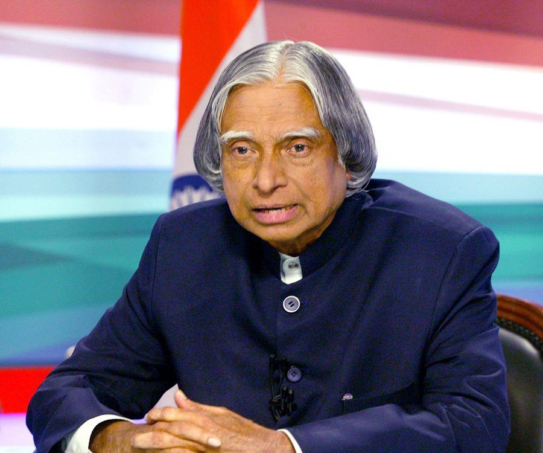

Dr.A.P.J.ABDUL KALAM
-MISSILE MAN OF INDIA
"Winners are not those who never fail but those who never quit."
1931-Born Avul Pakir Jainulabdeen Abdul Kalam on October 15, in Rameswaram, Tamil Nadu.
1954-Graduates in Physics from Saint Joseph's College, Tiruchirapalli.
1960-Gains degree in Aeronautical Engineering from Madras Institute of Technology.
1969-Transferred to ISRO from the DRDO.
1980-India enters the space club by putting the Rohini satellite in the near earth orbit with the first indigenous Satellite Launch Vehicle (SLV-III), developed under the stewardship of Dr. Kalam.
1980s-1990s-As the chief of the Integrated Guided Missile Development Programme, he was responsible for the development and operationalisation of AGNI and PRITHVI Missiles.
1992-1999-Works as Chief Scientific Advisor to the PM and Secretary of the DRDO
1998-India conducts the Pokhran II nuclear tests in May with Dr. Kalam as the chief project coordinator.
1999-2001-Principal Scientific Advisor to the Government of India.
2002-2007-President of India
2015-The 11th President of India, widely acclaimed as the "people's President", passed away on July 27, 2015 after collapsing during a lecture at the Indian Institute of Management in Shillong,India.
Here is the timeline of Dr.A.P.J.Abdul Kalam!..
Some Famous Books of Dr.A.P.J.ABDUL KALAM:
- Wings of Fire
- Ignited Minds
- 2020-A Vision for the new millennium
- Mission India
- Indomitable Spirit
- 1981: Padma Bhushan – Government of India
- 1990: Padma Vibhushan – Government of India
- Bharat Ratna – Government of India
- 1997: Indira Gandhi Award for National Integration – Government of India
- 1998: Veer Savarkar Award – Government of India
- 2000: SASTRA Ramanujan Prize – Shanmugha Arts, Science, Technology & Research Academy, India
- 2013: Von Braun Award – National Space Society
For more informations,Click Here